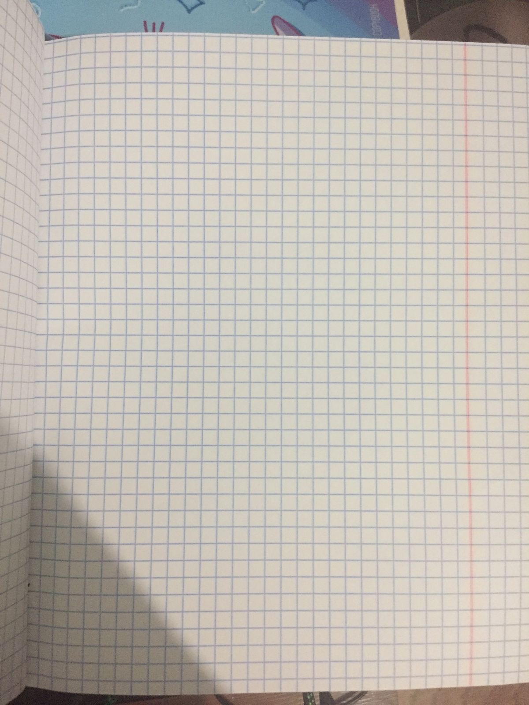

✍️ HandWrite A4
Стиль почерка
Виктор
Discipuli Britannica
Domosed
Pecita
Segoe Script
Мой почерк
Shantell Sans
Bad Script
Caveat
Kalam
Marck Script
Neucha
Pangolin
Бумага
Тетрадь 1
Тетрадь 2
Тетрадь 3
Тетрадь 4
Тетрадь 5
Тетрадь 6
Цвет ручки
Синий
Чернильно-синий
Чёрный
Выравнивание
Слева
По центру
Справа
✏️ Размер текста
Размер
30
Межстрочный интервал
1
🖊️ Реалистичность почерка
Общий наклон
0
Неровность букв
8
Расстояние между словами
1
Насыщенность чернил
92
📐 Положение текста
Отступ сверху
0
Отступ слева
0
Смещение X
0
Смещение Y
0
Ширина текста
800
✍️ Создать
💾 Сохранить PNG
